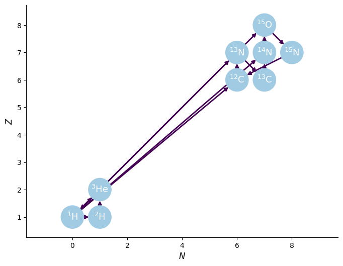
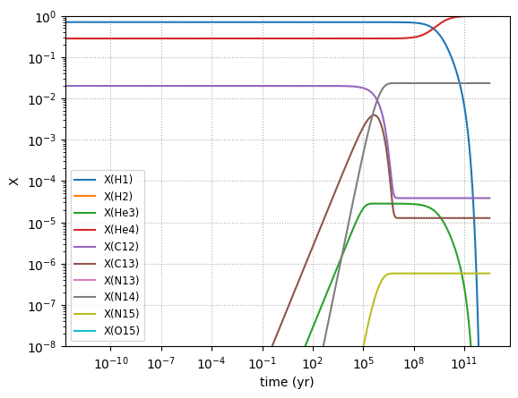

Integration Example#
We can use pynucastro to generate the righthand side function for an astrophysical reaction network.
We’ll create a H=burning network that has the rates for all p+p and the basic CNO cycle
import numpy as np
import matplotlib.pyplot as plt
import pynucastro as pyna
rate_names = ["p(p,)d",
"d(p,g)he3",
"he3(he3,pp)he4",
"c12(p,g)n13",
"c13(p,g)n14",
"n13(,)c13",
"n14(p,g)o15",
"n15(p,a)c12",
"o15(,)n15"]
rl = pyna.ReacLibLibrary()
rates = rl.get_rate_by_name(rate_names)
rc = pyna.RateCollection(rates=rates)
We can visualize the network and rates linking the nuclei
fig = rc.plot()

pynucastro can write out the python code needed to evaluate the reaction rates
pynet = pyna.PythonNetwork(rates=rates)
pynet.write_network("cno_integration_example.py")
Show code cell content
%cat cno_integration_example.py
import numba
import numpy as np
from scipy import constants
from numba.experimental import jitclass
from pynucastro.rates import TableIndex, TableInterpolator, TabularRate, Tfactors
from pynucastro.screening import PlasmaState, ScreenFactors
jp = 0
jd = 1
jhe3 = 2
jhe4 = 3
jc12 = 4
jc13 = 5
jn13 = 6
jn14 = 7
jn15 = 8
jo15 = 9
nnuc = 10
A = np.zeros((nnuc), dtype=np.int32)
A[jp] = 1
A[jd] = 2
A[jhe3] = 3
A[jhe4] = 4
A[jc12] = 12
A[jc13] = 13
A[jn13] = 13
A[jn14] = 14
A[jn15] = 15
A[jo15] = 15
Z = np.zeros((nnuc), dtype=np.int32)
Z[jp] = 1
Z[jd] = 1
Z[jhe3] = 2
Z[jhe4] = 2
Z[jc12] = 6
Z[jc13] = 6
Z[jn13] = 7
Z[jn14] = 7
Z[jn15] = 7
Z[jo15] = 8
# masses in ergs
mass = np.zeros((nnuc), dtype=np.float64)
mass[jp] = 0.0015040963047307696
mass[jd] = 0.0030058819195053215
mass[jhe3] = 0.004501176706825056
mass[jhe4] = 0.0059735574859708365
mass[jc12] = 0.017909017027273523
mass[jc13] = 0.01940644192976114
mass[jn13] = 0.01940999951603316
mass[jn14] = 0.020898440897976135
mass[jn15] = 0.022386433805845516
mass[jo15] = 0.02239084645968795
names = []
names.append("H1")
names.append("H2")
names.append("He3")
names.append("He4")
names.append("C12")
names.append("C13")
names.append("N13")
names.append("N14")
names.append("N15")
names.append("O15")
def to_composition(Y):
"""Convert an array of molar fractions to a Composition object."""
from pynucastro import Composition, Nucleus
nuclei = [Nucleus.from_cache(name) for name in names]
comp = Composition(nuclei)
for i, nuc in enumerate(nuclei):
comp.X[nuc] = Y[i] * A[i]
return comp
def energy_release(dY):
"""return the energy release in erg/g (/s if dY is actually dY/dt)"""
enuc = 0.0
for i, y in enumerate(dY):
enuc += y * mass[i]
enuc *= -1*constants.Avogadro
return enuc
@jitclass([
("p_p__d__weak__bet_pos_", numba.float64),
("p_p__d__weak__electron_capture", numba.float64),
("p_d__He3", numba.float64),
("He3_He3__p_p_He4", numba.float64),
("p_C12__N13", numba.float64),
("p_C13__N14", numba.float64),
("N13__C13__weak__wc12", numba.float64),
("p_N14__O15", numba.float64),
("p_N15__He4_C12", numba.float64),
("O15__N15__weak__wc12", numba.float64),
])
class RateEval:
def __init__(self):
self.p_p__d__weak__bet_pos_ = np.nan
self.p_p__d__weak__electron_capture = np.nan
self.p_d__He3 = np.nan
self.He3_He3__p_p_He4 = np.nan
self.p_C12__N13 = np.nan
self.p_C13__N14 = np.nan
self.N13__C13__weak__wc12 = np.nan
self.p_N14__O15 = np.nan
self.p_N15__He4_C12 = np.nan
self.O15__N15__weak__wc12 = np.nan
@numba.njit()
def ye(Y):
return np.sum(Z * Y)/np.sum(A * Y)
@numba.njit()
def p_p__d__weak__bet_pos_(rate_eval, tf):
# p + p --> d
rate = 0.0
# bet+w
rate += np.exp( -34.7863 + -3.51193*tf.T913i + 3.10086*tf.T913
+ -0.198314*tf.T9 + 0.0126251*tf.T953 + -1.02517*tf.lnT9)
rate_eval.p_p__d__weak__bet_pos_ = rate
@numba.njit()
def p_p__d__weak__electron_capture(rate_eval, tf):
# p + p --> d
rate = 0.0
# ecw
rate += np.exp( -43.6499 + -0.00246064*tf.T9i + -2.7507*tf.T913i + -0.424877*tf.T913
+ 0.015987*tf.T9 + -0.000690875*tf.T953 + -0.207625*tf.lnT9)
rate_eval.p_p__d__weak__electron_capture = rate
@numba.njit()
def p_d__He3(rate_eval, tf):
# d + p --> He3
rate = 0.0
# de04
rate += np.exp( 8.93525 + -3.7208*tf.T913i + 0.198654*tf.T913
+ 0.333333*tf.lnT9)
# de04n
rate += np.exp( 7.52898 + -3.7208*tf.T913i + 0.871782*tf.T913
+ -0.666667*tf.lnT9)
rate_eval.p_d__He3 = rate
@numba.njit()
def He3_He3__p_p_He4(rate_eval, tf):
# He3 + He3 --> p + p + He4
rate = 0.0
# nacrn
rate += np.exp( 24.7788 + -12.277*tf.T913i + -0.103699*tf.T913
+ -0.0649967*tf.T9 + 0.0168191*tf.T953 + -0.666667*tf.lnT9)
rate_eval.He3_He3__p_p_He4 = rate
@numba.njit()
def p_C12__N13(rate_eval, tf):
# C12 + p --> N13
rate = 0.0
# ls09n
rate += np.exp( 17.1482 + -13.692*tf.T913i + -0.230881*tf.T913
+ 4.44362*tf.T9 + -3.15898*tf.T953 + -0.666667*tf.lnT9)
# ls09r
rate += np.exp( 17.5428 + -3.77849*tf.T9i + -5.10735*tf.T913i + -2.24111*tf.T913
+ 0.148883*tf.T9 + -1.5*tf.lnT9)
rate_eval.p_C12__N13 = rate
@numba.njit()
def p_C13__N14(rate_eval, tf):
# C13 + p --> N14
rate = 0.0
# nacrr
rate += np.exp( 15.1825 + -13.5543*tf.T9i
+ -1.5*tf.lnT9)
# nacrn
rate += np.exp( 18.5155 + -13.72*tf.T913i + -0.450018*tf.T913
+ 3.70823*tf.T9 + -1.70545*tf.T953 + -0.666667*tf.lnT9)
# nacrr
rate += np.exp( 13.9637 + -5.78147*tf.T9i + -0.196703*tf.T913
+ 0.142126*tf.T9 + -0.0238912*tf.T953 + -1.5*tf.lnT9)
rate_eval.p_C13__N14 = rate
@numba.njit()
def N13__C13__weak__wc12(rate_eval, tf):
# N13 --> C13
rate = 0.0
# wc12w
rate += np.exp( -6.7601)
rate_eval.N13__C13__weak__wc12 = rate
@numba.njit()
def p_N14__O15(rate_eval, tf):
# N14 + p --> O15
rate = 0.0
# im05n
rate += np.exp( 17.01 + -15.193*tf.T913i + -0.161954*tf.T913
+ -7.52123*tf.T9 + -0.987565*tf.T953 + -0.666667*tf.lnT9)
# im05r
rate += np.exp( 6.73578 + -4.891*tf.T9i
+ 0.0682*tf.lnT9)
# im05r
rate += np.exp( 7.65444 + -2.998*tf.T9i
+ -1.5*tf.lnT9)
# im05n
rate += np.exp( 20.1169 + -15.193*tf.T913i + -4.63975*tf.T913
+ 9.73458*tf.T9 + -9.55051*tf.T953 + 0.333333*tf.lnT9)
rate_eval.p_N14__O15 = rate
@numba.njit()
def p_N15__He4_C12(rate_eval, tf):
# N15 + p --> He4 + C12
rate = 0.0
# nacrn
rate += np.exp( 27.4764 + -15.253*tf.T913i + 1.59318*tf.T913
+ 2.4479*tf.T9 + -2.19708*tf.T953 + -0.666667*tf.lnT9)
# nacrr
rate += np.exp( -6.57522 + -1.1638*tf.T9i + 22.7105*tf.T913
+ -2.90707*tf.T9 + 0.205754*tf.T953 + -1.5*tf.lnT9)
# nacrr
rate += np.exp( 20.8972 + -7.406*tf.T9i
+ -1.5*tf.lnT9)
# nacrr
rate += np.exp( -4.87347 + -2.02117*tf.T9i + 30.8497*tf.T913
+ -8.50433*tf.T9 + -1.54426*tf.T953 + -1.5*tf.lnT9)
rate_eval.p_N15__He4_C12 = rate
@numba.njit()
def O15__N15__weak__wc12(rate_eval, tf):
# O15 --> N15
rate = 0.0
# wc12w
rate += np.exp( -5.17053)
rate_eval.O15__N15__weak__wc12 = rate
def rhs(t, Y, rho, T, screen_func=None):
return rhs_eq(t, Y, rho, T, screen_func)
@numba.njit()
def rhs_eq(t, Y, rho, T, screen_func):
tf = Tfactors(T)
rate_eval = RateEval()
# reaclib rates
p_p__d__weak__bet_pos_(rate_eval, tf)
p_p__d__weak__electron_capture(rate_eval, tf)
p_d__He3(rate_eval, tf)
He3_He3__p_p_He4(rate_eval, tf)
p_C12__N13(rate_eval, tf)
p_C13__N14(rate_eval, tf)
N13__C13__weak__wc12(rate_eval, tf)
p_N14__O15(rate_eval, tf)
p_N15__He4_C12(rate_eval, tf)
O15__N15__weak__wc12(rate_eval, tf)
if screen_func is not None:
plasma_state = PlasmaState(T, rho, Y, Z)
scn_fac = ScreenFactors(1, 1, 1, 1)
scor = screen_func(plasma_state, scn_fac)
rate_eval.p_p__d__weak__bet_pos_ *= scor
rate_eval.p_p__d__weak__electron_capture *= scor
scn_fac = ScreenFactors(1, 1, 1, 2)
scor = screen_func(plasma_state, scn_fac)
rate_eval.p_d__He3 *= scor
scn_fac = ScreenFactors(2, 3, 2, 3)
scor = screen_func(plasma_state, scn_fac)
rate_eval.He3_He3__p_p_He4 *= scor
scn_fac = ScreenFactors(1, 1, 6, 12)
scor = screen_func(plasma_state, scn_fac)
rate_eval.p_C12__N13 *= scor
scn_fac = ScreenFactors(1, 1, 6, 13)
scor = screen_func(plasma_state, scn_fac)
rate_eval.p_C13__N14 *= scor
scn_fac = ScreenFactors(1, 1, 7, 14)
scor = screen_func(plasma_state, scn_fac)
rate_eval.p_N14__O15 *= scor
scn_fac = ScreenFactors(1, 1, 7, 15)
scor = screen_func(plasma_state, scn_fac)
rate_eval.p_N15__He4_C12 *= scor
dYdt = np.zeros((nnuc), dtype=np.float64)
dYdt[jp] = (
-2*5.00000000000000e-01*rho*Y[jp]**2*rate_eval.p_p__d__weak__bet_pos_
-2*5.00000000000000e-01*rho**2*ye(Y)*Y[jp]**2*rate_eval.p_p__d__weak__electron_capture
-rho*Y[jp]*Y[jd]*rate_eval.p_d__He3
-rho*Y[jp]*Y[jc12]*rate_eval.p_C12__N13
-rho*Y[jp]*Y[jc13]*rate_eval.p_C13__N14
-rho*Y[jp]*Y[jn14]*rate_eval.p_N14__O15
-rho*Y[jp]*Y[jn15]*rate_eval.p_N15__He4_C12
+2*5.00000000000000e-01*rho*Y[jhe3]**2*rate_eval.He3_He3__p_p_He4
)
dYdt[jd] = (
-rho*Y[jp]*Y[jd]*rate_eval.p_d__He3
+5.00000000000000e-01*rho*Y[jp]**2*rate_eval.p_p__d__weak__bet_pos_
+5.00000000000000e-01*rho**2*ye(Y)*Y[jp]**2*rate_eval.p_p__d__weak__electron_capture
)
dYdt[jhe3] = (
-2*5.00000000000000e-01*rho*Y[jhe3]**2*rate_eval.He3_He3__p_p_He4
+rho*Y[jp]*Y[jd]*rate_eval.p_d__He3
)
dYdt[jhe4] = (
+5.00000000000000e-01*rho*Y[jhe3]**2*rate_eval.He3_He3__p_p_He4
+rho*Y[jp]*Y[jn15]*rate_eval.p_N15__He4_C12
)
dYdt[jc12] = (
-rho*Y[jp]*Y[jc12]*rate_eval.p_C12__N13
+rho*Y[jp]*Y[jn15]*rate_eval.p_N15__He4_C12
)
dYdt[jc13] = (
-rho*Y[jp]*Y[jc13]*rate_eval.p_C13__N14
+Y[jn13]*rate_eval.N13__C13__weak__wc12
)
dYdt[jn13] = (
-Y[jn13]*rate_eval.N13__C13__weak__wc12
+rho*Y[jp]*Y[jc12]*rate_eval.p_C12__N13
)
dYdt[jn14] = (
-rho*Y[jp]*Y[jn14]*rate_eval.p_N14__O15
+rho*Y[jp]*Y[jc13]*rate_eval.p_C13__N14
)
dYdt[jn15] = (
-rho*Y[jp]*Y[jn15]*rate_eval.p_N15__He4_C12
+Y[jo15]*rate_eval.O15__N15__weak__wc12
)
dYdt[jo15] = (
-Y[jo15]*rate_eval.O15__N15__weak__wc12
+rho*Y[jp]*Y[jn14]*rate_eval.p_N14__O15
)
return dYdt
def jacobian(t, Y, rho, T, screen_func=None):
return jacobian_eq(t, Y, rho, T, screen_func)
@numba.njit()
def jacobian_eq(t, Y, rho, T, screen_func):
tf = Tfactors(T)
rate_eval = RateEval()
# reaclib rates
p_p__d__weak__bet_pos_(rate_eval, tf)
p_p__d__weak__electron_capture(rate_eval, tf)
p_d__He3(rate_eval, tf)
He3_He3__p_p_He4(rate_eval, tf)
p_C12__N13(rate_eval, tf)
p_C13__N14(rate_eval, tf)
N13__C13__weak__wc12(rate_eval, tf)
p_N14__O15(rate_eval, tf)
p_N15__He4_C12(rate_eval, tf)
O15__N15__weak__wc12(rate_eval, tf)
if screen_func is not None:
plasma_state = PlasmaState(T, rho, Y, Z)
scn_fac = ScreenFactors(1, 1, 1, 1)
scor = screen_func(plasma_state, scn_fac)
rate_eval.p_p__d__weak__bet_pos_ *= scor
rate_eval.p_p__d__weak__electron_capture *= scor
scn_fac = ScreenFactors(1, 1, 1, 2)
scor = screen_func(plasma_state, scn_fac)
rate_eval.p_d__He3 *= scor
scn_fac = ScreenFactors(2, 3, 2, 3)
scor = screen_func(plasma_state, scn_fac)
rate_eval.He3_He3__p_p_He4 *= scor
scn_fac = ScreenFactors(1, 1, 6, 12)
scor = screen_func(plasma_state, scn_fac)
rate_eval.p_C12__N13 *= scor
scn_fac = ScreenFactors(1, 1, 6, 13)
scor = screen_func(plasma_state, scn_fac)
rate_eval.p_C13__N14 *= scor
scn_fac = ScreenFactors(1, 1, 7, 14)
scor = screen_func(plasma_state, scn_fac)
rate_eval.p_N14__O15 *= scor
scn_fac = ScreenFactors(1, 1, 7, 15)
scor = screen_func(plasma_state, scn_fac)
rate_eval.p_N15__He4_C12 *= scor
jac = np.zeros((nnuc, nnuc), dtype=np.float64)
jac[jp, jp] = (
-2*5.00000000000000e-01*rho*2*Y[jp]*rate_eval.p_p__d__weak__bet_pos_
-2*5.00000000000000e-01*rho**2*ye(Y)*2*Y[jp]*rate_eval.p_p__d__weak__electron_capture
-rho*Y[jd]*rate_eval.p_d__He3
-rho*Y[jc12]*rate_eval.p_C12__N13
-rho*Y[jc13]*rate_eval.p_C13__N14
-rho*Y[jn14]*rate_eval.p_N14__O15
-rho*Y[jn15]*rate_eval.p_N15__He4_C12
)
jac[jp, jd] = (
-rho*Y[jp]*rate_eval.p_d__He3
)
jac[jp, jhe3] = (
+2*5.00000000000000e-01*rho*2*Y[jhe3]*rate_eval.He3_He3__p_p_He4
)
jac[jp, jc12] = (
-rho*Y[jp]*rate_eval.p_C12__N13
)
jac[jp, jc13] = (
-rho*Y[jp]*rate_eval.p_C13__N14
)
jac[jp, jn14] = (
-rho*Y[jp]*rate_eval.p_N14__O15
)
jac[jp, jn15] = (
-rho*Y[jp]*rate_eval.p_N15__He4_C12
)
jac[jd, jp] = (
-rho*Y[jd]*rate_eval.p_d__He3
+5.00000000000000e-01*rho*2*Y[jp]*rate_eval.p_p__d__weak__bet_pos_
+5.00000000000000e-01*rho**2*ye(Y)*2*Y[jp]*rate_eval.p_p__d__weak__electron_capture
)
jac[jd, jd] = (
-rho*Y[jp]*rate_eval.p_d__He3
)
jac[jhe3, jp] = (
+rho*Y[jd]*rate_eval.p_d__He3
)
jac[jhe3, jd] = (
+rho*Y[jp]*rate_eval.p_d__He3
)
jac[jhe3, jhe3] = (
-2*5.00000000000000e-01*rho*2*Y[jhe3]*rate_eval.He3_He3__p_p_He4
)
jac[jhe4, jp] = (
+rho*Y[jn15]*rate_eval.p_N15__He4_C12
)
jac[jhe4, jhe3] = (
+5.00000000000000e-01*rho*2*Y[jhe3]*rate_eval.He3_He3__p_p_He4
)
jac[jhe4, jn15] = (
+rho*Y[jp]*rate_eval.p_N15__He4_C12
)
jac[jc12, jp] = (
-rho*Y[jc12]*rate_eval.p_C12__N13
+rho*Y[jn15]*rate_eval.p_N15__He4_C12
)
jac[jc12, jc12] = (
-rho*Y[jp]*rate_eval.p_C12__N13
)
jac[jc12, jn15] = (
+rho*Y[jp]*rate_eval.p_N15__He4_C12
)
jac[jc13, jp] = (
-rho*Y[jc13]*rate_eval.p_C13__N14
)
jac[jc13, jc13] = (
-rho*Y[jp]*rate_eval.p_C13__N14
)
jac[jc13, jn13] = (
+rate_eval.N13__C13__weak__wc12
)
jac[jn13, jp] = (
+rho*Y[jc12]*rate_eval.p_C12__N13
)
jac[jn13, jc12] = (
+rho*Y[jp]*rate_eval.p_C12__N13
)
jac[jn13, jn13] = (
-rate_eval.N13__C13__weak__wc12
)
jac[jn14, jp] = (
-rho*Y[jn14]*rate_eval.p_N14__O15
+rho*Y[jc13]*rate_eval.p_C13__N14
)
jac[jn14, jc13] = (
+rho*Y[jp]*rate_eval.p_C13__N14
)
jac[jn14, jn14] = (
-rho*Y[jp]*rate_eval.p_N14__O15
)
jac[jn15, jp] = (
-rho*Y[jn15]*rate_eval.p_N15__He4_C12
)
jac[jn15, jn15] = (
-rho*Y[jp]*rate_eval.p_N15__He4_C12
)
jac[jn15, jo15] = (
+rate_eval.O15__N15__weak__wc12
)
jac[jo15, jp] = (
+rho*Y[jn14]*rate_eval.p_N14__O15
)
jac[jo15, jn14] = (
+rho*Y[jp]*rate_eval.p_N14__O15
)
jac[jo15, jo15] = (
-rate_eval.O15__N15__weak__wc12
)
return jac
Now we can import the network that was just created
import cno_integration_example as cno
from scipy.integrate import solve_ivp
Now we’ll set the thermodynamic conditions. We’ll pick the conditions inside the core of the Sun. We initialize mass fractions and then convert to molar fractions, since that’s what the RHS uses
rho = 150
T = 1.5e7
X = np.zeros(cno.nnuc)
X[cno.jp] = 0.7
X[cno.jhe4] = 0.28
X[cno.jc12] = 0.02
Y0 = X / cno.A
Y0
array([0.7 , 0. , 0. , 0.07 , 0.00166667,
0. , 0. , 0. , 0. , 0. ])
We’ll use the BDF solver from SciPy–this works well with “stiff” reaction networks.
tmax = 1.e20
sol = solve_ivp(cno.rhs, [0, tmax], Y0, method="BDF", jac=cno.jacobian,
dense_output=True, args=(rho, T), rtol=1.e-8, atol=1.e-10)
sol
message: The solver successfully reached the end of the integration interval.
success: True
status: 0
t: [ 0.000e+00 1.000e-04 ... 8.201e+19 1.000e+20]
y: [[ 7.000e-01 7.000e-01 ... -3.175e-20 -6.269e-21]
[ 0.000e+00 2.992e-22 ... -1.319e-11 -1.658e-11]
...
[ 0.000e+00 1.888e-71 ... 3.859e-08 3.859e-08]
[ 0.000e+00 3.937e-65 ... -9.641e-37 -1.904e-37]]
sol: <scipy.integrate._ivp.common.OdeSolution object at 0x7fd1a19d8c90>
t_events: None
y_events: None
nfev: 1286
njev: 31
nlu: 176
Now we can plot the mass fractions.
fig = plt.figure()
ax = fig.add_subplot(111)
seconds_per_year = 60 * 60 * 24 * 365.25
for n in range(cno.nnuc):
ax.loglog(sol.t / seconds_per_year, sol.y[n,:] * cno.A[n], label=f"X({cno.names[n].capitalize()})")
#ax.set_xlim(1.e8, 1.e13)
ax.set_ylim(1.e-8, 1.0)
ax.legend(fontsize="small")
ax.set_xlabel("time (yr)")
ax.set_ylabel("X")
ax.grid(ls=":")
